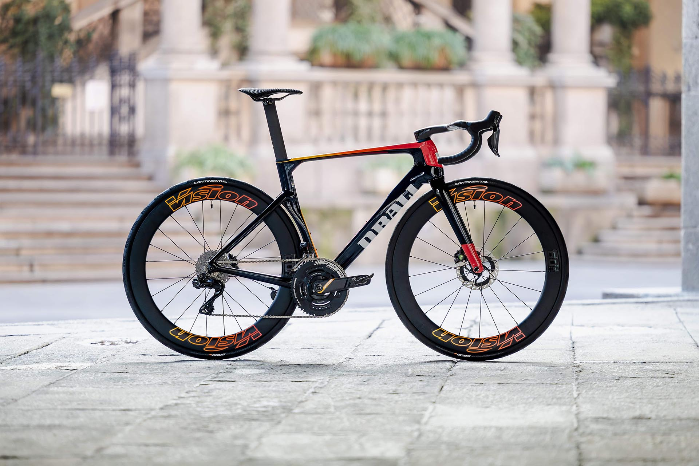

Drali Milano · Iridio
Regola · Dardo
Gusto · GTR Elite Ultra
Officine Mattio · Vento
Sur rendez-vous
Le studio reçoit uniquement sur rendez-vous. Vous disposez du lieu, du temps et de notre attention pour imaginer le vélo qui vous ressemble.
Draguignan · 06 38 82 22 19